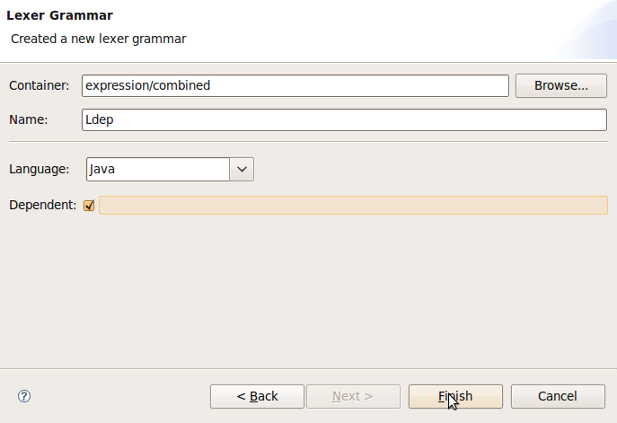
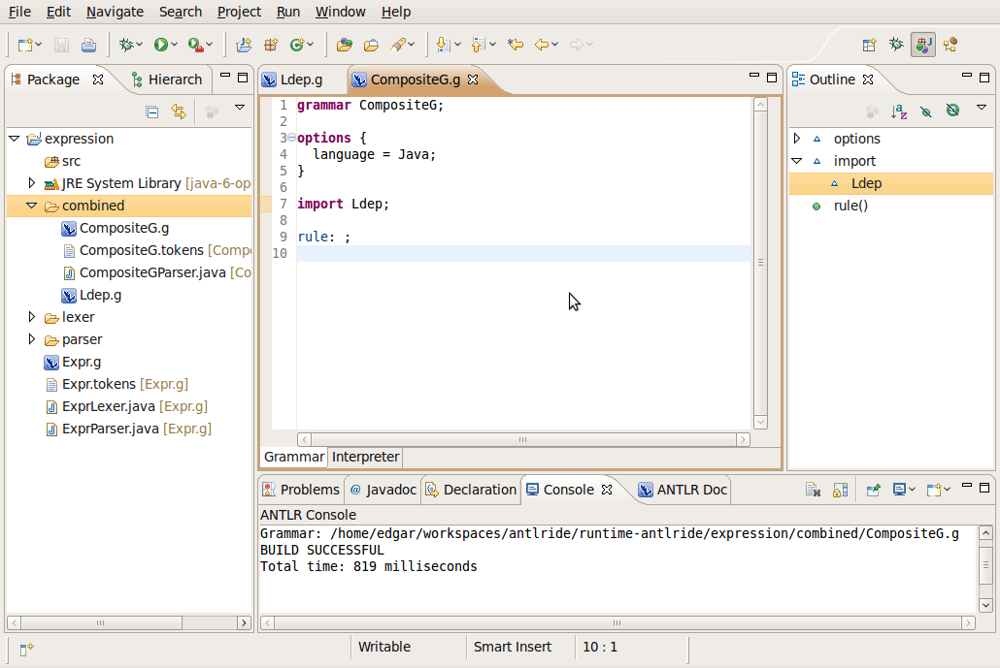

Working with combined grammars
Note: when you work with composite grammars all the grammars files must be in the same folder
Select the menu item File>New>ANTLR
IDE>Lexer Grammar to open the Lexer
Grammar dialog wizard
In the Name field type Ldep
Select the Dependent option

Click finish
Note that if you save your grammar the build and code
generation process is not triggered
Select the menu item File>New>ANTLR
IDE>Combined Grammar to open the Combined
Grammar dialog wizard
In the Name field type CompositeG. Click
finish
Add the import statement: "import Ldep;"

Save your grammar
Now, if you save the "Ldep" grammar, the build and code generation process is executed